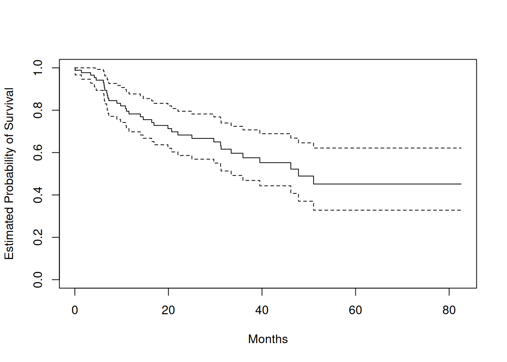
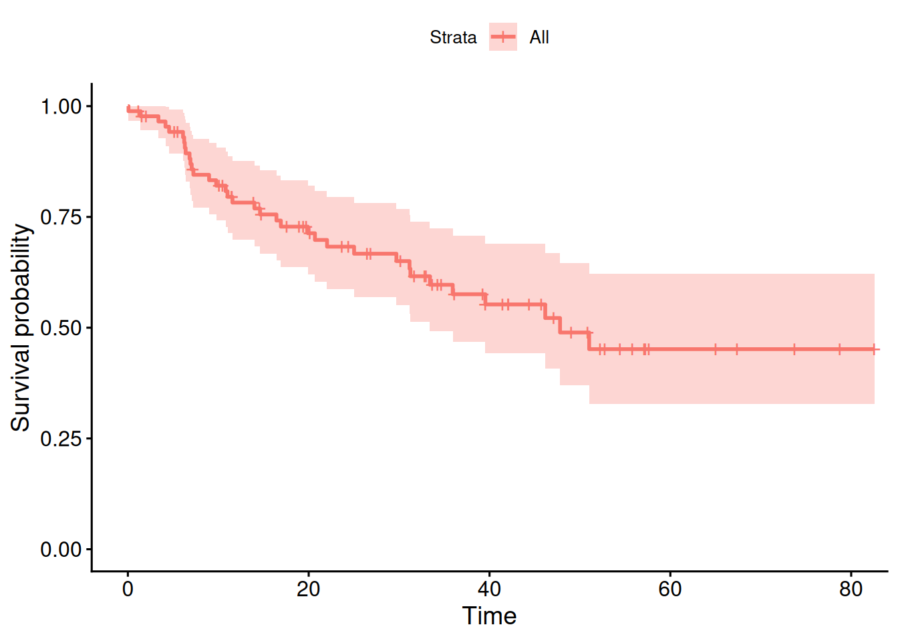
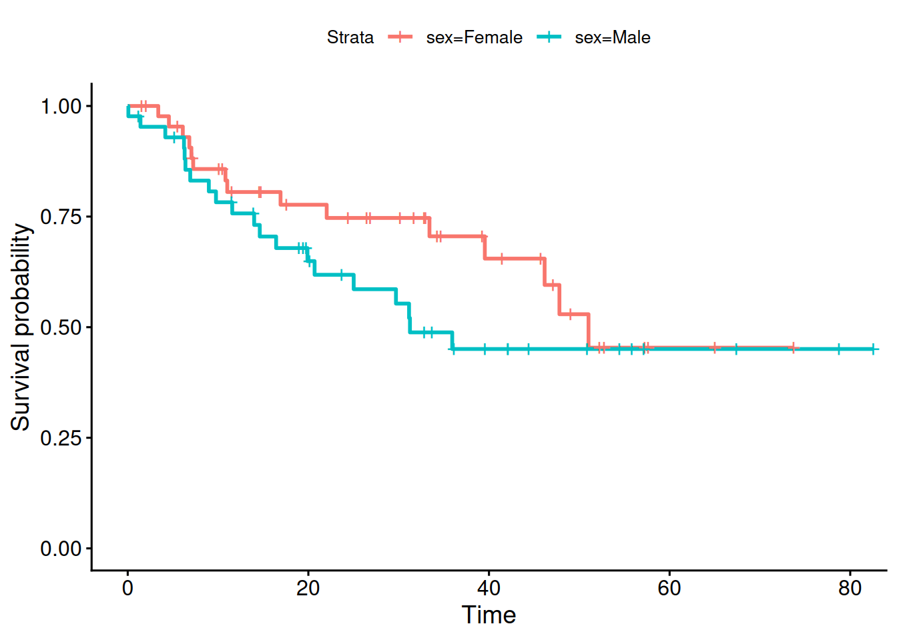
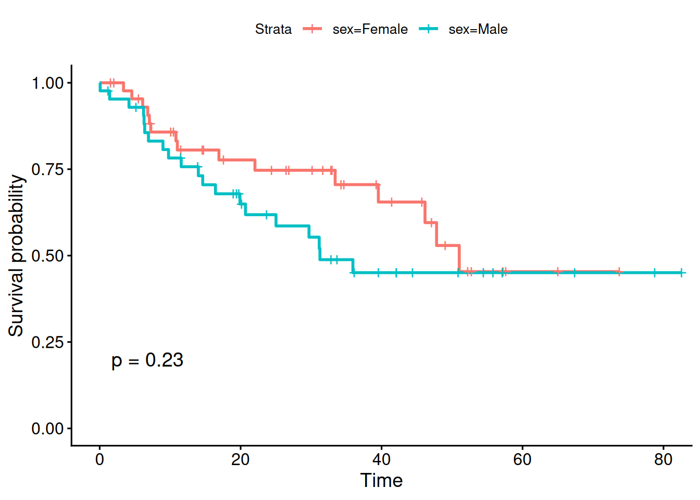
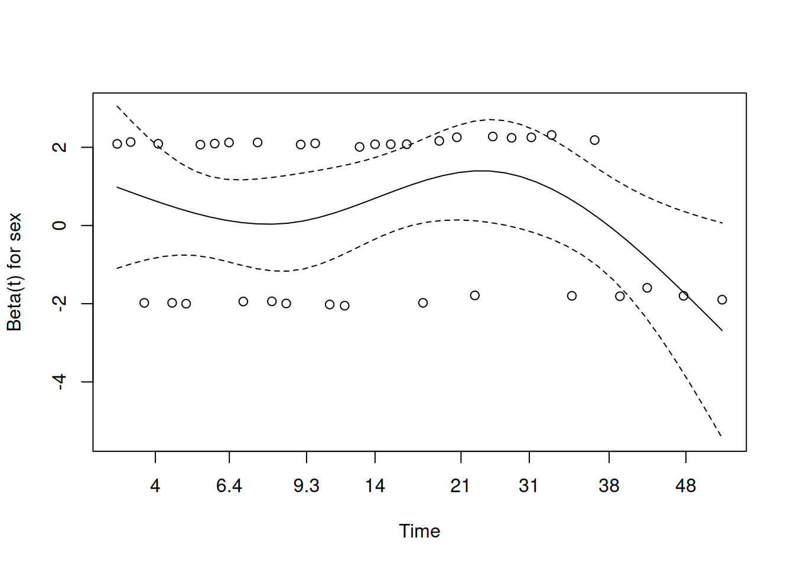

Based on the plot, do men and women appear to have similar survival patterns?
Use a log-rank test to formally compare the survival curves.
Solution
Kaplan-Meier curve for all patients:
fit.surv <-survfit(Surv(time, status) ~1, data = data_brain)plot(fit.surv, xlab ="Months", ylab ="Estimated Probability of Survival")

##or plot using ggsurvplotggsurvplot(fit.surv)

Kaplan-Meier curves by sex:
fit.sex <-survfit(Surv(time, status) ~ sex, data = data_brain)ggsurvplot(fit.sex)

The curves can be compared visually. If they are clearly separated, this suggests possible differences in survival, although a formal statistical test is needed.
Log-rank test:
logrank_test <-survdiff(Surv(time, status) ~ sex, data = data_brain)logrank_test## Call:## survdiff(formula = Surv(time, status) ~ sex, data = data_brain)## ## N Observed Expected (O-E)^2/E (O-E)^2/V## sex=Female 45 15 18.5 0.676 1.44## sex=Male 43 20 16.5 0.761 1.44## ## Chisq= 1.4 on 1 degrees of freedom, p= 0.2pchisq(logrank_test$chisq, df =length(logrank_test$n) -1, lower.tail =FALSE)## [1] 0.2300592## The logrank p-value can be printed easily in the ggsurvplotggsurvplot(fit.sex, pval=TRUE)

The log-rank test compares the survival experience in the two groups over the full follow-up period. A small p-value would suggest that survival differs between men and women.
25.2 Cox regression
Exercise 25.2 (Cox proportional hazards model) Continue with the brain cancer dataset.
Fit a Cox proportional hazards model with sex as predictor.
Interpret the hazard ratio for sex.
Test the proportional hazards assumption.
Fit a Cox model with several predictors: sex, diagnosis, loc, ki, gtv, and stereo.
Which predictors appear to be important?
Solution
Cox model with sex only:
fit.cox <-coxph(Surv(time, status) ~ sex, data = data_brain)summary(fit.cox)## Call:## coxph(formula = Surv(time, status) ~ sex, data = data_brain)## ## n= 88, number of events= 35 ## ## coef exp(coef) se(coef) z Pr(>|z|)## sexMale 0.4077 1.5033 0.3420 1.192 0.233## ## exp(coef) exp(-coef) lower .95 upper .95## sexMale 1.503 0.6652 0.769 2.939## ## Concordance= 0.565 (se = 0.045 )## Likelihood ratio test= 1.44 on 1 df, p=0.2## Wald test = 1.42 on 1 df, p=0.2## Score (logrank) test = 1.44 on 1 df, p=0.2
The hazard ratio for sex is obtained as exp(coef). It compares the hazard of the event between the sex groups. If the HR is above 1, the hazard is higher in the coded comparison group; if it is below 1, the hazard is lower.
Test the proportional hazards assumption:
ph_test <-cox.zph(fit.cox)print(ph_test)## chisq df p## sex 0.588 1 0.44## GLOBAL 0.588 1 0.44plot(ph_test)

If the p-value is small, this suggests evidence against the proportional hazards assumption.
Variables such as age_at_init and sex are time-invariant for an individual, whereas dep_lifetime can change over time. The variables START and STOP define the time interval for each row, and heroin is the event indicator.
Cox model with time-varying covariate:
cox.timevar <-coxph(Surv(START, STOP, heroin) ~ age_at_init + sex + dep_lifetime,cluster = RANDID,data = data_opioid)summary(cox.timevar)## Call:## coxph(formula = Surv(START, STOP, heroin) ~ age_at_init + sex + ## dep_lifetime, data = data_opioid, cluster = RANDID)## ## n= 1853, number of events= 27 ## ## coef exp(coef) se(coef) robust se z Pr(>|z|) ## age_at_init -0.3932 0.6749 0.1350 0.1247 -3.153 0.00161 **## sexMale 0.1515 1.1635 0.3925 0.3831 0.395 0.69254 ## dep_lifetime 1.0580 2.8807 0.3991 0.3850 2.748 0.00600 **## ---## Signif. codes: 0 '***' 0.001 '**' 0.01 '*' 0.05 '.' 0.1 ' ' 1## ## exp(coef) exp(-coef) lower .95 upper .95## age_at_init 0.6749 1.4817 0.5286 0.8617## sexMale 1.1635 0.8594 0.5492 2.4652## dep_lifetime 2.8807 0.3471 1.3544 6.1271## ## Concordance= 0.716 (se = 0.042 )## Likelihood ratio test= 15.24 on 3 df, p=0.002## Wald test = 18.11 on 3 df, p=4e-04## Score (logrank) test = 15.45 on 3 df, p=0.001, Robust = 11.63 p=0.009## ## (Note: the likelihood ratio and score tests assume independence of## observations within a cluster, the Wald and robust score tests do not).
The hazard ratio for dep_lifetime compares the hazard of heroin initiation between those with and without lifetime opioid dependence, adjusting for the other predictors. If the HR is above 1, dependence is associated with higher hazard.
25.5 Competing risks
Exercise 25.5 (Competing risks in bone marrow transplant data) The dataset data-bmt.rds contains follow-up data for leukemia patients after bone marrow transplantation. The event types are:
0 = censored
1 = relapse
2 = transplant-related mortality
data_bmt <-readRDS("data/data-bmt.rds")
Convert dis and status to factors with suitable labels.
Estimate the cumulative incidence functions (CIFs) for the competing events.
Plot the CIFs.
Estimate the CIFs separately for the disease groups (ALL and AML).
Use Gray’s test to compare CIFs between the groups.
Gray’s test compares cumulative incidence functions between groups separately for each event type. Small p-values suggest evidence of differences between the disease groups for that event type.